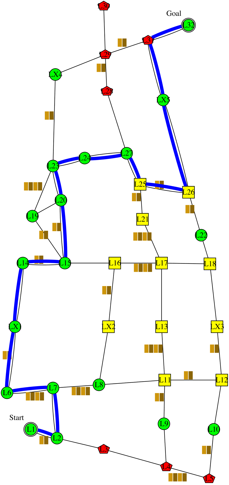
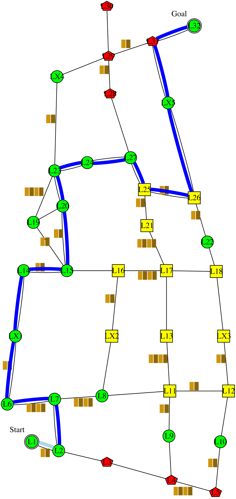

I'm planning to follow this policy . It is expected to have 0 collision; take 174 minutes; and have intrusiveness-penalty of 8: be non-intrusive 6 steps, somewhat-intrusive 5 steps, and very-intrusive 1 step. It has the lowest expected intrusiveness, and collision. Alternatively, following this policy  would reduce the time to 167 minutes. However, I didn't choose that policy because it would increase the collision to 0.2 collision. The decrease in time is not worth the increase in collision.